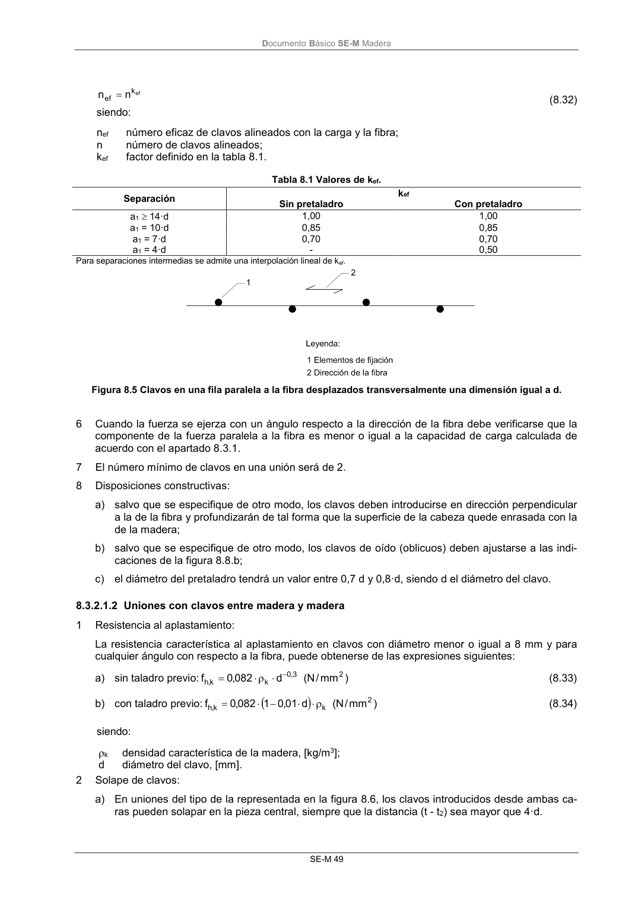

DB-SE-M Madera · edición 2019-12-20 · capa oficial
Documento DB-SE-M-oficial · SHA-256 del PDF 26b5819839ebfda78b0b119c5e76a0a37773b0d763c05688541870075df93718
Copia fiel del PDF fuente · Fuente oficial
Ficha de la disposición en la fuente oficial
Formatos: JSON del segmento · Markdown
sección de clavos para d 180 600 f M 6 ,2 u Rk ,y (8.29) cuadrada sección de clavos para d 270 600 f M 6 ,2 u Rk ,y (8.30) siendo: My,Rk valor característico del momento plástico, [N·mm]; d diámetro o lado de la sección del clavo, [mm]; fu resistencia característica a tracción del alambre, [N/mm2]. 5 En clavos introducidos con taladro previo, la separación a1 (véase figura 8.7) puede reducirse hasta un mínimo de 4·d, si la capacidad de carga se reduce por el factor siguiente: d cos 3 4 a k 1 r (8.31) En uniones con clavos alineados con la dirección de la fibra y sometidos a una componente de la fuerza paralela a la fibra, a no ser que los clavos de esa fila estén colocados al tresbolillo con un des- fase de al menos -1·d- (véase figura 8.5), la capacidad de carga debe calcularse tomando como nú- mero eficaz de clavos el siguiente: DocumentoBásico SE-M Madera SE-M 49 ef k ef n n (8.32) siendo: nef número eficaz de clavos alineados con la carga y la fibra; n número de clavos alineados; kef factor definido en la tabla 8.1. Tabla 8.1 Valores de kef. Separación kef Sin pretaladro Con pretaladro a1 14·d 1,00 1,00 a1 = 10·d 0,85 0,85 a1 = 7·d 0,70 0,70 a1 = 4·d - 0,50 Para separaciones intermedias se admite una interpolación lineal de kef. Figura 8.5 Clavos en una fila paralela a la fibra desplazados transversalmente una dimensión igual a d. 6 Cuando la fuerza se ejerza con un ángulo respecto a la dirección de la fibra debe verificarse que la componente de la fuerza paralela a la fibra es menor o igual a la capacidad de carga calculada de acuerdo con el apartado 8.3.1. 7 El número mínimo de clavos en una unión será de 2. 8
